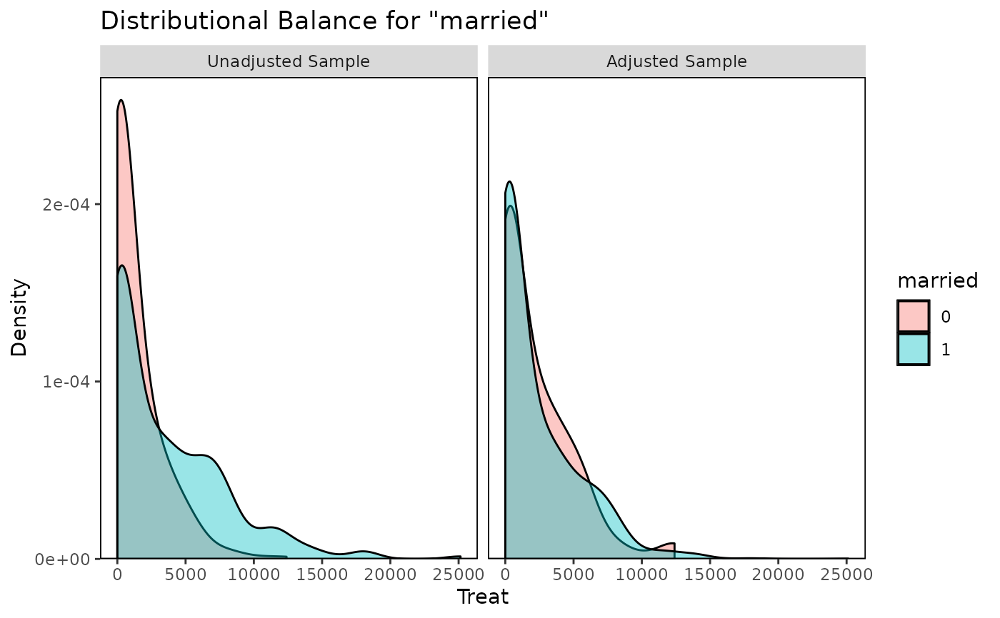
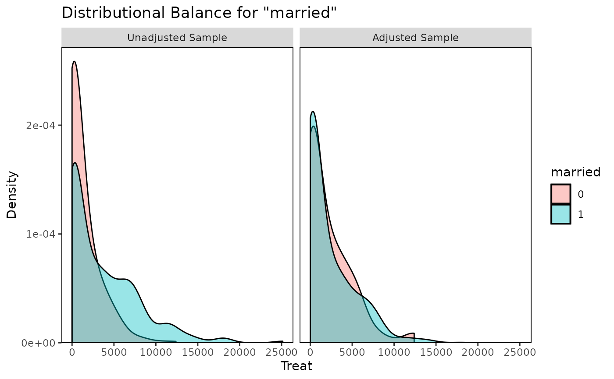

Generates density plots, bar graphs, or scatterplots displaying distributional balance between treatment and covariates using ggplot2.
Usage
bal.plot(
x,
var.name,
...,
which,
which.sub = NULL,
cluster = NULL,
which.cluster = NULL,
imp = NULL,
which.imp = NULL,
which.treat = NULL,
which.time = NULL,
mirror = FALSE,
type = "density",
colors = NULL,
grid = FALSE,
sample.names,
position = "right",
facet.formula = NULL,
disp.means = getOption("cobalt_disp.means", FALSE),
alpha.weight = TRUE
)Arguments
- x
the object for which balance is to be assessed; can be any object for which there is support in
bal.tab().- var.name
character; the name of the variable whose values are to be plotted. To view distributions of the distance measure (e.g., propensity score), if any, use"distance"as the argument unless the distance variable has been named. If there are duplicate variable names across inputs,bal.plot()will first look in the covariatedata.framefromx, followed byaddl, and thendistance, if any. If not specified, will use the first covariate available with a warning.- ...
other arguments to define the variable, treatment, and weights. Some inputs are required depending on the method. See Additional Arguments. Can also be used to supply the
bw,adjust,kernel, andnarguments forggplot2::geom_density()and thebinsargument forggplot2::geom_histogram().- which
whether to display distributional balance for the adjusted (
"adjusted") or unadjusted sample ("unadjusted") or both at the same time ("both"). When multiple weights are present, the names of the weights can be supplied, too. The default is to display balance for the adjusted sample only unless no weights, subclasses, or matching strata are specified. Multiple values and abbreviations allowed.- which.sub
numeric; if subclassification is used, a vector corresponding to the subclass(es) for which the distributions are to be displayed. If.all(the default), distributions from all subclasses are displayed in a grid.- cluster
optional; a vector of cluster membership, or the name of a variable in an available data set passed to
bal.plot()that contains cluster membership.- which.cluster
if clusters are used, which cluster(s) to display. Can be cluster names or numerical indices for which to display balance. Indices correspond to the alphabetical order of cluster names. If
.all(the default), all clusters are displayed. If.none, cluster information is ignored and the marginal distribution of the covariates is displayed.- imp
optional; a vector of imputation indices, or the name of a variable in an available data set passed to
bal.plot()that contains imputation indices.- which.imp
if imputations are used, which imputations(s) to display. Must be numerical indices for which to display balance. If
.all(the default), all imputations are displayed. If.none, data from all imputations are combined into one distribution.- which.treat
which treatment groups to display. If
NULL(the default) orNA, all treatment groups are displayed.- which.time
for longitudinal treatments, which time points to display. Can be treatment names or time period indices. If
NULL(the default) orNA, all time points are displayed.- mirror
logical; if the treatment is binary, the covariate is continuous, and densities or histograms are requested, whether to display mirrored densities/histograms or overlapping densities/histograms. Ignored otherwise.- type
character; for binary and multi-category treatments with a continuous covariate, whether to display densities ("density"), histograms ("histogram"), or empirical cumulative density function plots ("ecdf"). The default is to display densities. Abbreviations are allowed.- colors
a vector of colors for the plotted densities/histograms. See 'Color Specification' at
graphics::par(). Defaults to the default ggplot2 colors.- grid
logical; whether gridlines should be shown on the plot. Default isTRUE.- sample.names
character; new names to be given to the samples (i.e., in place of "Unadjusted Sample" and "Adjusted Sample"). For example, when matching it used, it may be useful to enterc("Unmatched", "Matched").- position
the position of the legend. This can be any value that would be appropriate as an argument to
legend.positioninggplot2::theme().- facet.formula
a
formuladesignating which facets should be on the rows and columns. This should be of the "historical" formula interface toggplot2::facet_grid(). If of the forma ~ b,awill be faceted on the rows andbon the columns. To only facet on the rows, provide a one-sided formula with an empty left-hand side. To only facet on the columns, the formula should be of the forma ~ .(i.e., with only.on the right-hand side). The allowable facets depend on which arguments have been supplied tobal.plot(); possible values includewhich,cluster,imp, and (for longitudinal treatments)time. IfNULL,bal.plot()will decide what looks best; this argument exists in case you disagree with its choice.- disp.means
logical; for a categorical treatment with a continuous covariate, whether a line should be drawn for each treatment level denoting the (weighted) mean of the covariate. Ignored iftypeis not "density" or "histogram". Default isFALSE.- alpha.weight
logical; if both the treatment and the covariate are continuous, whether points should be shaded according to their weight. Fainter points are those that have smaller weights. Default isTRUE.
Details
bal.plot() uses ggplot2::ggplot() from the ggplot2 package, and (invisibly) returns a "ggplot" object. For categorical treatments with continuous covariates or continuous treatments with categorical covariates, density plots are created using ggplot2::geom_density(), histograms are created using ggplot2::geom_histogram(), and empirical CDF plots are created using ggplot2::geom_step(); for categorical treatments with categorical covariates, bar graphs are created using ggplot2::geom_bar(); for continuous treatments with continuous covariates, scatterplots are created using ggplot2::geom_point().
For continuous treatments with continuous covariates, four additional lines are presented for aid in balance assessment. The red line is the linear fit line. The blue line is a smoothing curve generated with ggplot2's ggplot2::geom_smooth() with method = "auto". The horizontal black line is a horizontal reference line intercepting the (unweighted) treatment mean. The vertical black line is a reference line intercepting the (unweighted) treatment mean. Balance is indicated by the flatness of both fit lines and whether they pass through the intersection of the two black reference lines.
When multiple plots are to be displayed (i.e., when requesting subclass balance, cluster balance, or imputation balance, or when multiple sets of weights are provided or which = "both", or when treatment is longitudinal), the plots will be displayed in a grid using ggplot2's ggplot2::facet_grid(). Subclassification cannot be used with clusters or multiply imputed data.
To change the plot and axis titles, use ggplot2::labs(). Because the output is a ggplot object, other elements can be changed using ggplot2 functions; see here for an example.
Additional Arguments
bal.plot() works like bal.tab() in that it can take a variety of types of inputs and yield the same output for each. Depending on what kind of input is given, different additional parameters are required in \dots. For details on what is required and allowed for each additional input and their defaults, see the help file for the bal.tab() method associated with the input. The following are the required additional arguments based on each input type:
* For `matchit` objects: None
* For `weightit` objects: None
* For `ps`, `ps.cont`, `mnps`, and `iptw` objects: (`stop.method`; see [defaults][bal.tab.ps]).
* For `Match` objects: `formula` and `data` or `covs` and `treat`.
* For `optmatch` objects: `formula` and `data` or `covs` (`treat` is not required).
* For `CBPS` objects: None
* For `ebalance` objects: `formula` and `data` or `covs` and `treat`.
* For `formula`s: `data`
* For `data.frame`s: `treat`
* For `designmatch` objects: `formula` and `data` or `covs` and `treat`.
* For `sbw` objects: None
* For `mimids` and `wimids` objects: None, but an argument to `which.imp` should be specified.
* For other objects processed through `bal.tab()`'s default method, whichever arguments are required to identify treatment, variables, and a conditioning method (if any).Examples
data("lalonde", package = "cobalt")
#Nearest Neighbor Matching
m.out <- MatchIt::matchit(treat ~ age + educ + race + married +
nodegree + re74 + re75,
data = lalonde)
bal.plot(m.out, "age", which = "both")
 bal.plot(m.out, "re74", which = "both", type = "ecdf")
bal.plot(m.out, "re74", which = "both", type = "ecdf")
 bal.plot(m.out, "race", which = "both")
bal.plot(m.out, "distance", which = "both", mirror = TRUE,
type = "histogram", colors = c("white", "black"))
#PS weighting with a continuous treatment
w.out <- WeightIt::weightit(re75 ~ age + I(age^2) + educ +
race + married + nodegree,
data = lalonde)
bal.plot(w.out, "age", which = "both")
bal.plot(w.out, "married", which = "both")

bal.plot(m.out, "race", which = "both")
bal.plot(m.out, "distance", which = "both", mirror = TRUE,
type = "histogram", colors = c("white", "black"))
#PS weighting with a continuous treatment
w.out <- WeightIt::weightit(re75 ~ age + I(age^2) + educ +
race + married + nodegree,
data = lalonde)
bal.plot(w.out, "age", which = "both")
bal.plot(w.out, "married", which = "both")
